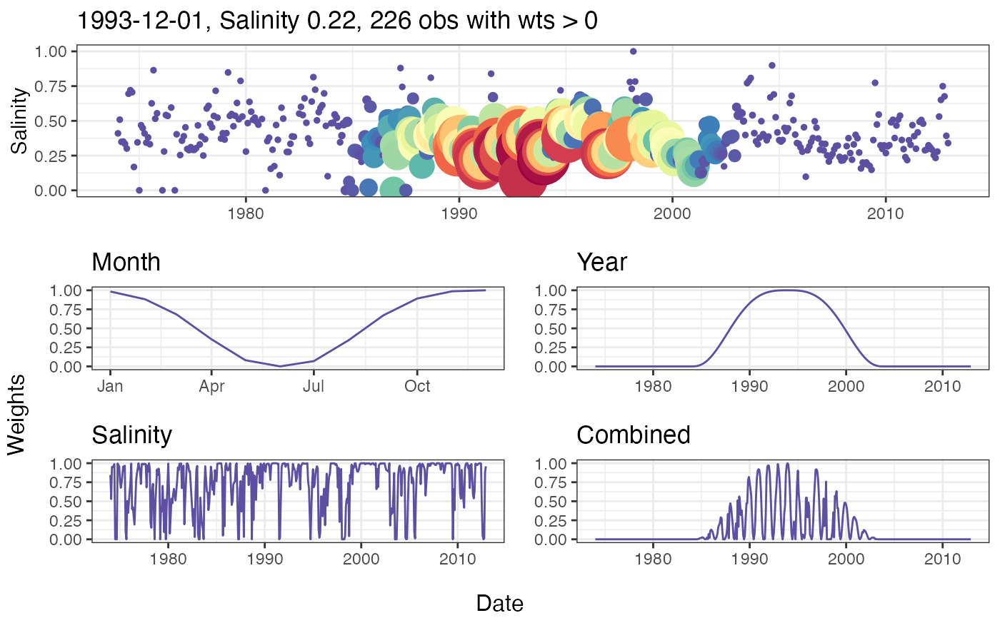
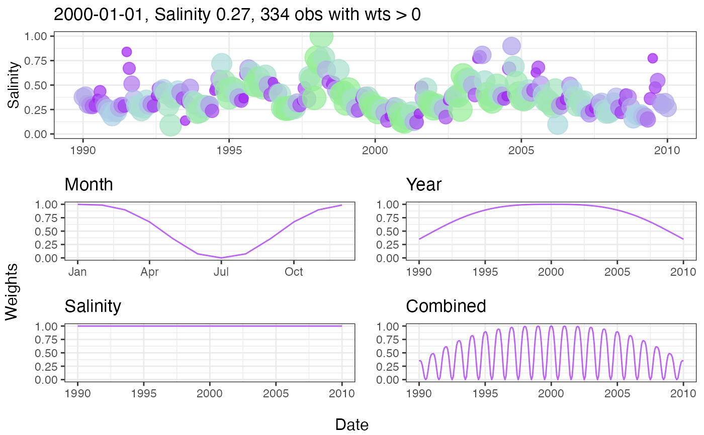

Create several plots showing the weights used to fit a model for a single observation.
wtsplot(dat_in, ...)
# S3 method for default
wtsplot(dat_in, ref = NULL, wins = list(0.5, 10,
NULL), min_obs = TRUE, slice = FALSE, dt_rng = NULL,
pt_rng = c(1, 12), col_vec = NULL, col_lns = NULL, alpha = 1,
as_list = FALSE, ...)
# S3 method for tidal
wtsplot(dat_in, ...)
# S3 method for tidalmean
wtsplot(dat_in, ...)input tidal object
arguments passed to other methods
chr string indicating the date at the center of the weighting window. Must be in the format 'YYYY-mm-dd' which is passed to as.Date. The closest observation is used if the actual is not present in the data. Defaults to the mean date if not supplied.
list with three elements passed to getwts indicating the half-window widths for day, year, and salinity/flow
logical to use window widening if less than 100 non-zero weights are found, passed to getwts
logical indicating if only weights bounded by the year window (i.e., the limiting window for the combined weights) are shown, passed to getwts
Optional chr string indicating the date range for all plots except seasonal (day) weights. Must be two values in the format 'YYYY-mm-dd' which is passed to as.Date.
numeric vector of two elements indicating point scaling for all weights in the plot of salinity/flow vs time.
chr string of plot colors to use, passed to gradcols and scale_colour_gradientn for weight shading. The last value in the vector is used as the line color if col_lns = NULL. Any color palette from RColorBrewer can be used as a named input. Palettes from grDevices must be supplied as the returned string of colors for each palette.
chr string of line color in plots
numeric value from zero to one indicating transparency of points and lines
logical indicating if plots should be returned in a list
A combined ggplot object created using grid.arrange. A list with elements for each individual plot will be returned if as_list = TRUE.
Create diagnostic plots to view the effects of different weighting windows on model predictions. The plots illustrate the weights that are used when fitting a weighted regression in reference to a single observation. The process is repeated for all observations when the entire model is fit. Five plots are produced by the function, each showing the weights in relation to time and the selected observation (i.e., center of the weighting window). The top plot shows salinity/flow over time with the points colored and sized by the combined weight vector. The remaining four plots show the weights over time for each separate weighting component (months/days, year, and salinity/flow) and the final combined vector.
## load a fitted tidal object
data(tidfit)
## plot using defaults,
wtsplot(tidfit)

## change the defaults
wtsplot(tidfit, ref = '2000-01-01', wins = list(0.5, 15, Inf),
dt_rng = c('1990-01-01', '2010-01-01'),
pt_rng = c(3, 8), col_vec = c('lightgreen', 'lightblue', 'purple'),
alpha = 0.7)
#> Warning: Removed 211 row(s) containing missing values (geom_path).
#> Warning: Removed 211 row(s) containing missing values (geom_path).
#> Warning: Removed 211 row(s) containing missing values (geom_path).
#> Warning: Removed 211 rows containing missing values (geom_point).
